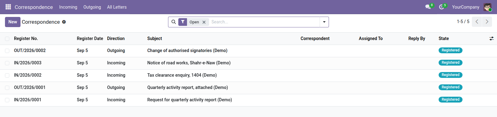

<section style="padding:32px 0;font-family:Roboto,Helvetica,Arial,sans-serif;color:#2b3a34;">
  <div style="max-width:900px;margin:0 auto;padding:0 24px;">

    <p style="font-size:12px;letter-spacing:.14em;text-transform:uppercase;color:#0b6b57;font-weight:600;margin:0 0 10px;">Productivity · Localization</p>
    <h1 style="font-size:40px;line-height:1.1;margin:0 0 14px;font-weight:700;">Correspondence Register (Maktoob)</h1>
    <p style="font-size:19px;line-height:1.55;color:#4c5a55;max-width:640px;margin:0 0 28px;">What came in, what went out, its number, who it was from and who has to deal with it. The bound register every Afghan office keeps, in Odoo.</p>

    <div style="background:#f6f7f5;border-left:3px solid #0b6b57;padding:18px 22px;margin:0 0 32px;font-size:16px;line-height:1.6;"><strong>The sequence is the point.</strong> Attaching a scan to a contact loses it. Numbers are issued in order, and a gap in the outgoing numbers is a question somebody has to answer.</div>

    <div style="margin:0 0 34px;">
      
      <div style="font-size:13px;color:#75837d;padding-top:8px;">The register: incoming and outgoing letters, each numbered in its own series</div>
    </div>

    <h2 style="font-size:24px;margin:0 0 16px;font-weight:600;">Two independent series</h2>
    <p style="font-size:16px;line-height:1.65;color:#4c5a55;margin:0 0 30px;">Incoming and outgoing are numbered separately, the way a paper register keeps two books. The direction cannot be changed once a letter is registered, because its number came from that series — you cancel it and register a new one, which is exactly what happens with paper.</p>

    <h2 style="font-size:24px;margin:0 0 16px;font-weight:600;">What a register entry holds</h2>
    <table style="width:100%;border-collapse:collapse;margin:0 0 30px;font-size:15px;">
      <thead><tr style="background:#edf0ec;">
        <th style="text-align:left;padding:10px 14px;border-bottom:1px solid #dce1db;">Recorded</th>
        <th style="text-align:left;padding:10px 14px;border-bottom:1px solid #dce1db;">Why separately</th>
      </tr></thead>
      <tbody>
        <tr><td style="padding:9px 14px;border-bottom:1px solid #eef1ed;">Register number and date</td><td style="padding:9px 14px;border-bottom:1px solid #eef1ed;">issued in order, not editable</td></tr>
        <tr><td style="padding:9px 14px;border-bottom:1px solid #eef1ed;">The letter's own date</td><td style="padding:9px 14px;border-bottom:1px solid #eef1ed;">a letter written on the 1st may not arrive until the 10th</td></tr>
        <tr><td style="padding:9px 14px;border-bottom:1px solid #eef1ed;">Their reference</td><td style="padding:9px 14px;border-bottom:1px solid #eef1ed;">the number the other office put on it</td></tr>
        <tr><td style="padding:9px 14px;border-bottom:1px solid #eef1ed;">Correspondent</td><td style="padding:9px 14px;border-bottom:1px solid #eef1ed;">a contact, or free text — a one-off letter from a district office does not justify creating a partner record</td></tr>
      </tbody>
    </table>

    <h2 style="font-size:24px;margin:0 0 16px;font-weight:600;">So a letter is not lost</h2>
    <ul style="font-size:16px;line-height:1.7;color:#4c5a55;margin:0 0 30px;padding-left:20px;">
      <li><strong>Assignment</strong> — an incoming letter nobody owns is a letter nobody answers</li>
      <li><strong>A reply-by date</strong> — with overdue letters filterable, before the ministry rings</li>
      <li><strong>Replies link back</strong> — to the letter they answer, so a thread stays intact and readable years later</li>
      <li><strong>The scan attached</strong> — to the register entry, so the letter can always be found again</li>
    </ul>

    <h2 style="font-size:24px;margin:0 0 16px;font-weight:600;">The register is a record</h2>
    <p style="font-size:16px;line-height:1.65;color:#4c5a55;margin:0 0 30px;">A closed letter cannot be cancelled. What happened, happened — and a register that can be tidied up afterwards is not a register anybody can rely on when the question finally comes.</p>

    <div style="border-top:1px solid #dce1db;padding-top:20px;font-size:14px;color:#75837d;">Odoo 19.0 Community · depends on <code>mail</code> only.</div>

  </div>
</section>
